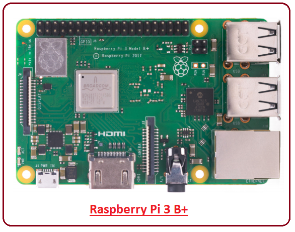
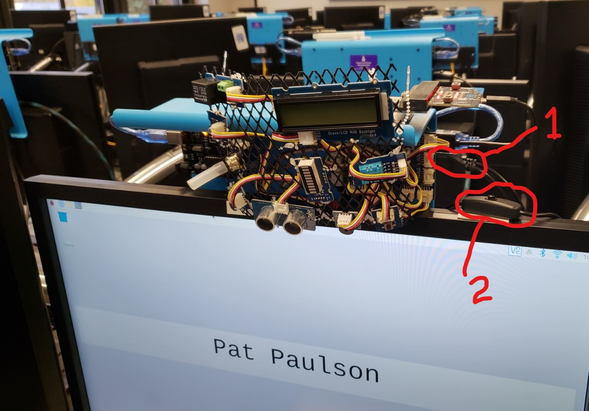
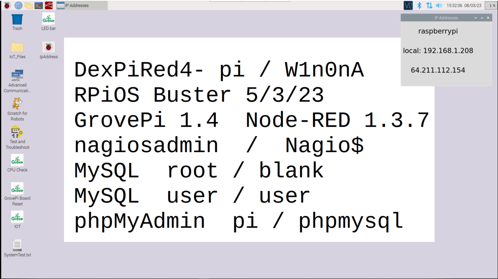
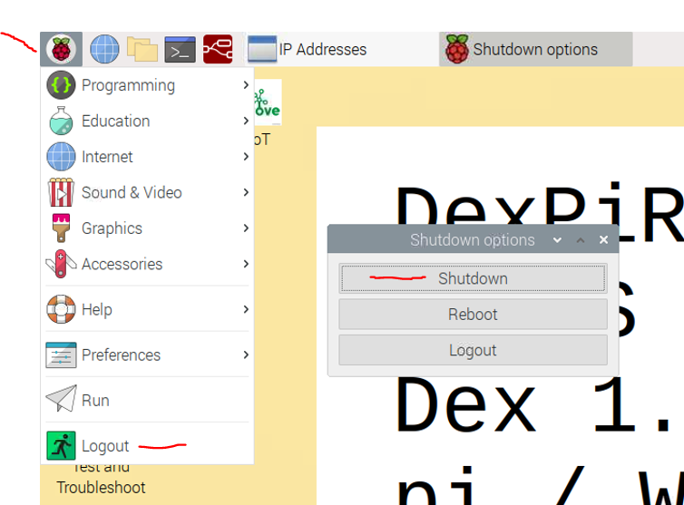
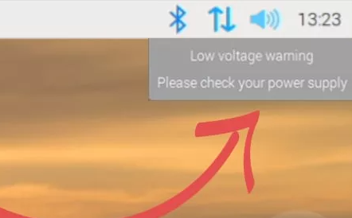
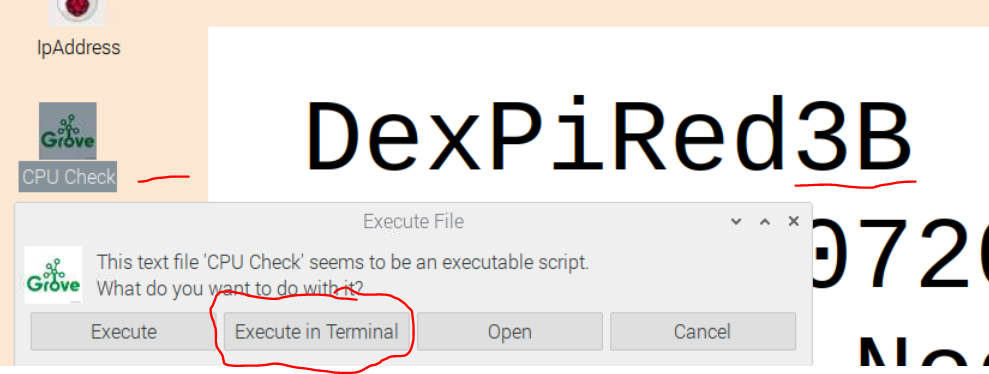
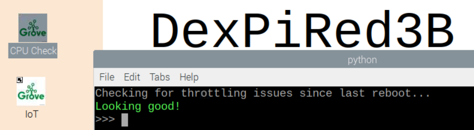
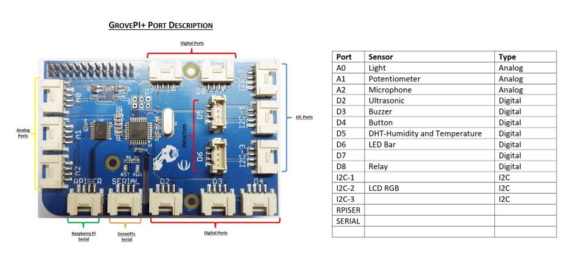

 Figure 1-Raspberry Pi 3 B+
These instructions show how to correctly startup, shutdown, and troubleshoot a Raspberry Pi single-board computer (SBC). SBCs are becoming ubiquitous-examples are Nest thermostats , Ring doorbells, and Home Automation. These devices make up the Internet of Things-IoT, which is greatly impacting organizations and everyday life.
After completing this assignment you will be able to:
 Figure 2-IoT Workstation- Raspberry Pi 3 B+ GrovePi + sensors and actuators Item 1-location to connect USB mouse or keyboard Item 2-power button
The Internet of Things workstations in the Somsen 301 lab consist of:
The Raspberry Pi is mounted to the back of the landscape monitor, and connecst to the landscape monitor with an HDMI cable. In order to toggle the landscape monitor between displaying the Raspberry Pi and your laptop, press the input select button. The input select button is marked with a painted dot or sticker in the lower right of the landscape monitor.
Every morning the Raspberry Pi applies updates and restarts. The desktop appears below:  Figure 3-Desktop at Startup Notice the following about the desktop:
Never turn the power button off or unplug the Raspberry Pi power supply unless you have first shutdown the Raspberry Pi.  Figure 4-Proper Shutdown Failure to properly shutdown the Raspberry Pi can result in corruption of the microSD card which contains the operating systems and programs. The result will be an SBC that does not run properly If this occurs notify the professor or a teaching assistant so that the microSD card can be reflashed with a new operating system image.
The IoT workstations have worked well since Fall 2019, but occasionally problems arise. The following is a list of potential problems, and what action to take.
 Figure 5-Low Voltage Warning
Note: on DexPiRed4 and later images, there is a 'CPU Check' program on the Desktop-double-click and select 'Execute in Terminal' The program checks and reports if the CPU has been throttled or experienced thermal excesses since it was last started.  
Figure 6-GrovePi+ Reset Light
You are expected to have a working knowledge of SBC hardware and software. If you do not understand how to use an item, perform a Google Search, refer to the WSU Technology Knowledge Base, ask a teaching assistant, or ask the instructor.
Figure 7-Raspberry Pi 3 B+ layout
The figure below depicts the GrovePi+ data collection board, which is mounted above the Raspberry Pi. Ten (10) sensors and actuators mounted on a wire mesh connect via 4-wire cables to various ports on the GrovePi+.  Figure 8-GrovePi+ Layout
W1n0nA
When all tasks are completed read and comprehend the statement below. Then press the Submit button.
Congratulations! You have successfully worked with a Raspberry Pi single board computer. In the next series of assignments you will explore how to communicate with and control the Raspberry Pi from another computer.